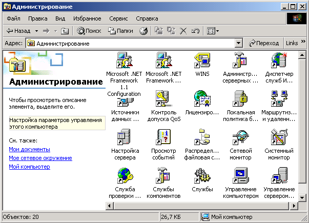
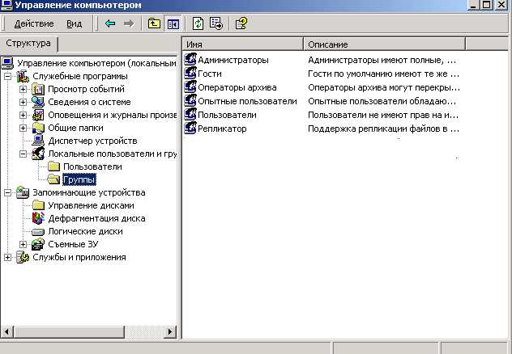

Программное обеспечение (ПО) компьютерной сети включает определенную совокупность программных средств, которые необходимы для коллективного доступа к ресурсам этой сети, а также реализации сетевых служб и эффективного управления сетевыми ресурсами. ПО сети включает следующие компоненты:
Системное сетевое ПО сети создается посредством использования сетевых операционных систем, драйверов, программных средств маршрутизаторов и шлюзов, сетевых утилит (операционных утилит, утилит администрирования и смешанных утилит.)
Центральную роль в компьютерной сети играет системное сетевое программное обеспечение, функции которого реализуются распределенной операционной системой сети, содержащей набор управляющих и обслуживающих программ. Распределенная операционная система обеспечивает: организацию связей между прикладными программами, реализуемыми в узлах компьютерной сети; доступ прикладных программ к ресурсам сети; синхронизацию работы прикладных программных средств; обмен информацией между программами; выполнение терминальных команд и т. д.
Компьютер в локальной сети, участвуя в сетевом взаимодействии, «вынужден» терять часть своей автономии. При этом программные средства компьютера, участвующие в сетевом взаимодействии, составляет часть сетевой операционной системы в широком смысле слова. Так что под сетевой операционной системой в широком смысле понимают совокупность операционных систем отдельных компьютеров, обеспечивающих обмен сообщениями и разделение ресурсов по единым правилам (протоколам). В узком же смысле слова сетевая ОС (NOS — Network Operating System) — это такая операционная система отдельного компьютера, которая обеспечивает ему реализацию необходимых сетевых функций и взаимодействий (совместную работу с файлами и приложениями, разрешение конфликтов, маршрутизацию и т.д.)
Вначале сетевые ОС создавались как надстройка над базовой ОС (минимум необходимых сетевых функций встраивался в базовую ОС, как, например, в старших версиях MS DOS). На этом же принципе построены и такие сетевые ОС, как LANtastic, Personal Ware и др. В последующем появились сетевые ОС, изначально предназначенные для работы в сети. У этих сетевых ОС сетевые функции органически встроены в архитектуру ОС. Это обеспечивало таким сетевым ОС логическую стройность, высокую производительность, простоту модификации и эксплуатации. Примерами таких ОС являются семейство сетевых ОС Novell NetWare, Windows NT фирмы Microsoft. сетевые ОС
Сетевые операционные системы делятся на одноранговые и двухранговые (или серверные). Сеть, на компьютерах которой установлены одноранговые ОС, обеспечивает этим компьютерам потенциально равные сетевые возможности. Ресурс любого из этих компьютеров, объявленный разделяемым, становится доступным всем компьютерам сети. Примеры одноранговых сетевых ОС: ОС LANtastic, Personal Ware, Windows for Workgroup, Windows NT Workstation, Windows 95, Windows 98, Windows 2000 Professional, Windows XP, Windows Vista, Windows 7. Серверные сетевые ОС, которые устанавливаются на одном или нескольких компьютерах сети, обеспечивают централизованный доступ к ресурсам этих компьютеров. К таким сетевым ОС относятся: семейство Banyan Vines, семейство Novell NetWare, IBM LAN Server, Sun NFS, Windows NT Server, Windows 2000 Server (семейство), Windows 2003 Server (семейство), Windows 2008 Server (семейство).
Семейство сетевых ОС фирмы Novell содержит версии NetWare 1.x, 2.x, 3.x, 4.x, 5.x, 6.x. В основе сетевых протоколов ОС NetWare лежит стек протоколов корпорации Xerox XNS (Xerox Network Systems; конец 1970-х начало 1980 гг.). Этот же стек положен и в основу сетевых протоколов сетевой ОС Banyan VINES. Сетевые ОС NetWare заняли вначале 1990-х существенную долю рынка и выдержали конкуренцию с Windows NT, после выпуска которой прекратили существование многие другие конкурирующие сетевых ОС. Сервера компании Novell отличались высокой надежностью; они могут работать годами без участия человека.
Компанией Novell также разработаны UnixWare (на основе Unix System V; UnixWare продана в 1995 г. компании Santa Cruz Operation; UnixWare 7.1 имеет 7 вариантов), openSUSE (дистрибутив Linux, существует более 600 дистрибутивов Linux), Open Enterprise Server (включает Novell NetWare, openSUSE и пакет сетевых служб). В 2010 году компания Novell была приобретена холдингом Attachmate Group за 2.2 миллиарда долларов.
История развития сетевых технологий в Microsoft берет начало в 1984 г. (программа MSNet в MS DOS v.3.1), но активная игра на рынке сетевых технологий начинается с появлением Windows NT 4.0 (Windows NT Workstation 4.0 и Windows NT Server 4.0), которая имела интерфейс аналогичный Windows 95 (появилась в 1995 г.). ОС Windows 95 обладала возможностями одноранговой сетевой ОС и позволяла работать в Интернет без использования дополнительных программ.
Следующим этапом в развитии сетевых технологий в Microsoft стало появление семейства Windows 2000, которое было разработано на основе Windows NT и унаследовало от нее высокую надежность и защищенность информации. К названному семейству относятся Windows 2000 Server (Windows NT Server 5.0), а также более мощные представители семейства: Windows 2000 Advanced Server и Windows 2000 Datacenter.
Дальнейшее развитие сетевых технологий в Microsoft получило воплощение в семействе ОС Windows Server 2003, которое включает: Windows Server 2003 Standard Edition, Windows Server 2003 Enterprise Edition, Windows Server 2003 Datacenter Edition, Windows Server 2003 Web Edition и Windows Small Business Server 2003. Семейство Windows Server 2003 предназначено для управления сетевыми серверами разного масштаба. Продукты этого семейства существенно различаются по количеству поддерживаемых процессоров, объемов оперативной памяти и целевому назначению.
К семейству ОС Windows Server 2008 относятся: Windows Server 2008 Standard Edition, Windows Server 2008 Enterprise Edition, Windows Server 2008 Datacenter Edition, Windows Server 2008 Web Edition.
Сетевые операционные системы NetWare имеют модульную архитектуру, позволяющую подключать необходимые загружаемые модули. Локальная сеть, в которой установлена операционная система NetWare, включает следующие компоненты:
Сетевая операционная система NetWare является системой коллективного пользования. Эффективность ее функционирования во многом зависит от организации (планирования и создания) сетевой среды, основными компонентами которой являются:
Организация сетевой среды осуществляется с использованием специальной базы данных – базы данных объектов сети. Такая база данных имеется на каждом файл-сервере сети. Она содержит список объектов (пользователи, группы, каталоги, файлы и т.д.) и их свойства (пароли, права, сетевые адреса и т.д. ). С помощью этой базы данных операционная система NetWare осуществляет управление структурой пользователей сети и организует систему защиты сети.
В NetWare имеются следующие категории пользователей:
1. Супервизор сети(системный администратор сети). Выполняет административные функции в сети. Имеет неограниченные права и может делегировать часть своих функций менеджерам и операторам сети.
2. Менеджеры сети (администраторы групп). Выполняют административные функции, которые делегирует Супервизор сети. Могут управлять группой пользователей либо отдельными пользователями.
3.Операторы сети. Выполняют текущее оперативное управление сетью. В их распоряжении имеются средства управления с консоли сервера, альтернативной или удаленной консолей. Операторы управляют сервером печати и очередями печати в сети.
4.Обычные пользователи сети. Используют ресурсы сети для решения своих задач.
Группы пользователей. В группу обычно включаются:
Объединение пользователей в группы позволяет упростить функции администрирования сетью (привилегии доступа к ресурсам сети предоставляются группе, а не отдельным пользователям).
С точки зрения системы группа пользователей является таким же объектом, как и пользователь сети. Ей дается определенное имя, и система присваивает ей соответствующий идентификатор в базе данных объектов сети. Как пользователь, так и группа могут быть созданы либо Супервизором, либо менеджерами сети. Они же определяют, какие пользователи могут входить в ту или иную группу, присваивают ей определенные права в каталогах или права доступа к определенным файлам. Пользователь может быть одновременно членом нескольких групп.
Супервизор сети (администратор системы) — это особый пользователь с именем SUPERVISOR. Он несет ответственность за функционирование сети, организует структуру пользователей сети, создает структуру каталога сети, обеспечивает необходимый уровень системы защиты сети, следит за рациональным использованием ресурсов сети, определяет политику развития сети и выполняет другие административные функции.
Система автоматически создает Супервизора и назначает ему как объекту базы данных сети идентификатор с номером 1, предоставляя ему на файловом сервере неограниченные права, которые не могут быть никем отменены. Супервизор сети может передать часть своих административных функций другим пользователям путем предоставления им эквивалента прав Супервизора. Супервизор сети может делегировать часть своих административных функций менеджерам сети, которые получают супервизорные права только на определенную часть сетевой среды и пользователей сети.
Менеджеры сети. Менеджеры сети выполняют административные функции, которые делегирует им Супервизор сети. Различают два типа менеджеров сети: менеджер среды пользователей и менеджер рабочей группы.
Менеджер среды пользователей (Account Manager) может устанавливать или изменять ограничения, распространяемые на пользователей, назначать им права, устанавливать эквивалент прав и пароли, назначать для них других менеджеров и т.д.
Менеджер рабочей группы (Workgroup Manager) управляет рабочей группой пользователей сети. Он может быть назначен только Супервизором сети, который делегирует ему свои привилегии для управления группой. Менеджер рабочей группы создает свою группу. Он формирует ее состав и наделяет пользователей необходимыми правами. Менеджер рабочей группы автоматически становится менеджером среди пользователей этой группы Менеджер рабочей группы, в отличие от менеджера среды пользователей, может создавать и удалять объекты сети (группы, пользователей). Менеджер рабочей группы может иметь в каталоге только те права, которые ему предоставит Супервизор.
Если же какой-либо пользователь создан Супервизором сети, а не менеджером группы, то только Супервизор становится менеджером среды этого пользователя. И если он не назначит менеджера рабочей группы менеджером среды этого пользователя, то не сможет включать его в свою группу и управлять им.
Пользователь и группа как объекты сети в определенной степени идентичны. Поэтому менеджером рабочей группы может быть назначен как пользователь, так и группа. В последнем случае любой член такой группы становится менеджером группы, и может формировать свою группу. Такой прием позволяет Супервизору упростить работу по созданию аппарата менеджеров сети.
Операторы сети. Операторы сети осуществляют оперативное управление сетью; в их задачи входит выполнение текущей эксплуатационной работы сети. По умолчанию все операторские функции выполняет Супервизор сети, но он может назначить для реализации этих функций специальных пользователей сети: оператора консоли файлового сервера, оператора сервера печати, оператора очереди печати.
Пользователь сети может хранить свои программы и данные, как на локальных дисках рабочей станции, так и на сетевых дисках файловых серверов сети.
Организация дисковой памяти и файловой системы в NetWare отличаются от их организации в DOS. Но для пользователя, выполняющего свою работу на рабочей станции под управлением DOS, эти отличия в значительной степени скрыты. Для него сетевое дисковое пространство представляется как бы расширением локального дискового пространства рабочей станции. А структура сетевого каталога практически соответствует структуре каталога DOS.
Структура каталога. Основной единицей сетевого дискового пространства является том (Volume). Жесткий диск файлового сервера может содержать несколько дисковых томов. Но дисковый том не ограничивается размером диска, он может перекрывать дисковое пространство нескольких жестких дисков.
Том является логической единицей дисковой памяти. С точки зрения пользователей рабочих станций, он в определенной степени соответствует локальному диску отдельной компьютерной системы. Каждый том имеет каталог, описываемый своей таблицей каталога тома. Структура этого каталога точно такая же, как структура каталога на локальном диске пользователя, она включает каталог, подкаталоги и файлы.
В структуре дискового пространства сети, где может быть несколько файловых серверов, можно выделить следующие уровни сетевого каталога:
Термины каталог и подкаталог относительны: каталог является подкаталогом по отношению к каталогу выше его уровнем. Каждый каталог может содержать неограниченное количество подкаталогов; ограничения определяются только лишь имеющимся в наличии объемом доступного пространства.
Начиная с NetWare 4.х, в сетевых продуктах фирмы Novell применяется технология NDS (Novell Directory Services). NDS содержит объекты трех типов: корень, конечные объекты (сетевые ресурсы: пользователи, серверы и т.д.) контейнеры (объекты, содержащие либо конечные объекты, либо другие контейнеры). Существует три типа контейнерных объектов: страна, организация, подразделение. В Netware 5 и выше NDS использоваться как для доступа к объектам, так и для обеспечения отказоустойчивости.
В NetWare 6.0 версия NDS 8.5 (eDirectiry) является полностью независимым кросс-платформенным продуктом, который может быть приобретен отдельно и установлен на Windows NT/2К, Linux, Solaris, Unix и Tru64. Создание и управление структурой объектов в NDS 8.5 осуществляется с помощью утилиты ConsoleOne
Посредством ConsoleOne можно создавать, перемещать, переименовывать, удалять и модифицировать любой тип объектов eDirectory, расширять схему дерева, просматривать контейнеры, выполнять поиск или фильтрацию по имени и типу объекта; контролировать наследование прав, управлять файловой системой на томах NetWare, а также расширять возможности Web-сервера и выполнять административные задачи NDS eDirectory через стандартный Web-браузер.
Система защиты NetWare имеет следующие уровни:
1. Защита входа в сеть с использованием списка имен и паролей.
2. Защита файлов и каталогов с предоставлением прав пользователю.
3. Защита файлов и каталогов с использованием их атрибутов.
4. Защита доступа к файловому серверу с консоли.
5. Защита ресурсов сети.
Защита входа в сеть (Login Security). Организацию защиты входа в сеть осуществляют Супервизор и менеджеры, которые назначают пользователям сети имена, пароли и устанавливают определенные ограничения на вход в сеть.
Имена пользователей (User name) являются основой системы защиты на первом уровне. Для входа в сеть пользователь должен ввести свое имя и пароль. Пароли пользователей (Passwords) являются опционными. Пароль может быть назначен пользователю Супервизором или менеджером или введен самим пользователем.
Защита файлов и каталогов с предоставлением прав пользователям сети. На этом уровне защиты определяется доступ пользователя к каталогам и файлам с предоставлением ему необходимых прав для работы. Это осуществляется путем назначения пользователям Опекунских прав (Trustee Rights Assignments) и установки Маски унаследованных (Inherited Rights Mask) в соответствующих каталогах.
Опекунские права дают возможность пользователю выполнять определенные действия с файлами и каталогами. Они могут быть предоставлены на уровне каталога или на уровне файла. Если опекунские права даются пользователю на уровне каталога, то они распространяют свое действие на все файлы в этом каталоге. На уровне же файлов - относятся только к определенным файлам. Опекунские права могут быть предоставлены как пользователю, так и группе. В последнем случае эти права, группе распространятся на всех пользователей данной группы.
Опекунские права пользователя в каталоге автоматически распространяется на его подкаталоги. Для этих целей в NetWare введен механизм управления наследованием прав в подкаталогах — Маска унаследованных прав (Inherited Rights Mask).
В системе имеется восемь прав, каждое из которых имеет название и идентифицируется соответствующей буквой.
S Supervisory Супервизорные
R Read Чтение
W Write Запись
C Create Создание
E Erase Удаление
M Modify Модифицирование
F File Scan Сканирование файлов
A Access Control Управление доступом
Права в каталоге отображаются строкой вида [SRWCEMFA], в которой буквы соответствуют назначенным правам. Права в каталоге имеют следующее действие.
Супервизорные. Предоставляют пользователю все права в каталоге, его файлах и его подкаталогах независимо от того, какие ограничения в подкаталогах вносит Маска унаследованных прав. Значение прав Супервизорные в Маске не может быть отменено никем, и это право распространяется на все подкаталоги.
Чтение. Предоставляет право открывать файлы в каталоге читать их содержимое или запускать программы.
Запись. Дает право открывать и модифицировать файлы.
Создание. Позволяет создавать файлы и подкаталоги в каталоге. Пользователь может создать файл, открыть его и записать в него информацию. Но после того, как файл будет закрыт, пользователь не сможет видеть его и писать в него, если ему не предоставлены такие права.
Удаление. Дает право удалять каталог, его файлы, его подкаталоги и файлы в них.
Модифицирование. Позволяет изменять атрибуты каталога и файлов, переименовывать каталог и файлы. Но оно не предоставляет право модифицировать содержимое файла.
Сканирование. Дает право пользователю видеть файлы и подкаталоги файлов данного каталога.
Управление. Дает право пользователю назначать и модифицировать опекунские права в данном каталоге и в его файлах другим пользователям, а также модифицировать Маску унаследованных прав в них. Пользователем могут устанавливаться любые права, кроме Супервизорных.
Права доступа к файлам назначаются для определенных файлов в каталоге. Обычно это нужно чтобы изменить какие-либо из прав доступа к некоторым файлам, предоставленных пользователю на уровне каталога. Права доступа к файлам позволяют выполнять следующие действия.
Супервизорные. Предоставляют пользователю все права доступа к файлу. Пользователь, имеющий это право, может давать любые права доступа к этому файлу другим пользователям.
Чтение. Позволяет открывать, читать и выполнять файл.
Запись. Дает право открывать и выполнять запись в файл
Создание. Дает возможность восстановить (Salvage) файл после его удаления.
Удаление. Дает возможность удалить файл.
Модифицирование. Дает право изменения атрибутов файла и его переименования.
Сканирование. Дает право видеть файл при выдаче списка файлов каталога. Если такое право доступа к файлу предоставляется пользователю в одном из подкаталогов, он может видеть всю цепочку подкаталогов, ведущую к корневому каталогу.
Управление доступом. Позволяет изменять значение права доступа к файлу и Маску унаследованных прав. Дает возможность пользователю предоставлять другим пользователям все права доступа к этому файлу, кроме Супервизорных.
Действительные эффективные права (Effective rights) определяют те реальные права, которые пользователь имеет в каталоге или файле. Действительные права в подкаталоге определяются как результат операции логического умножения действительных прав в родительском каталоге (учитывая групповые права в этом каталоге) на Маску унаследованных прав. Действительные права доступа к отдельным файлам определяются аналогичным образом.
Защита файлов и каталога с использованием их атрибутов.
Атрибуты файла и каталога являются средством их защиты. Они и имеют более высокий приоритет по отношению к действительным правам пользователей. Так, например, если файл имеет атрибут Только для Чтения, то даже в случае, если пользователь имеет право Записи в этот файл, он не сможет это сделать (ему будет доступно только чтение этого файла). Список атрибутов файлов и атрибутов каталога приведен в табл. 7.1 и табл. 7.2 соответственно.
Таблица 7.1. Список атрибутов файлов
Архивируемый |
Archive needed |
A |
Некопируемый |
Copy Inhibit |
C |
Неудаляемый |
Delete Inhibit |
D |
Только для исполнения |
Execute Only |
X |
Скрытый |
Hidden |
H |
Индексный |
Indexed |
I |
Стираемый |
Purge |
P |
Контролируемый по чтению |
Read Audit |
Ra |
Только для чтения/ чтение запись |
Read Only/ read write |
Ro/Rw |
Непереименуемый |
Rename Inhibit |
R |
Разделяемый |
Shareable |
S |
Системный |
System |
Sy |
Транзактный |
Transactional |
T |
Контролируемый по записи |
Write Audit |
Wa |
Таблица 7.2. Список атрибутов каталога
Неудаляемый |
Delete Inhibit |
D |
Скрытый |
Hidden |
H |
Стираемый |
Purge |
P |
Непереименуемый |
Rename Inhibit |
R |
Системный |
System |
Sy |
Архивируемый. Атрибут Архивируемый (более соответствует смыслу Требующий Архивирования) может быть(Archive Needed) назначен только для файлов. NetWare автоматически назначает этот атрибут любому файлу , который был модифицирован после его последнего резервного копирования (Back Up). Этот атрибут соответствует биту Archive в DOS.
Некопируемый. Этот атрибут может быть назначен только для файлов. Даже если пользователи имеют права Чтения и Сканирования файлов в каталоге или на уровне файлов, они не смогут копировать файл с таким атрибутом.
Неудаляемый. Этот атрибут может быть назначен каталогам и файлам. Он не позволяет пользователям удалять каталоги и файлы, даже если им предоставлено право Удаления на уровне файла или на уровне каталога. Если пользователям было предоставлено право Модификации, они могут удалить атрибут Неудаляемый и только затем уже удалить файл или каталог.
Только для исполнения. Атрибут может быть назначен только для файлов. Этот атрибут защищает программы от копирования. Только Супервизор может назначить этот атрибут файлу, но даже он не может удалить его. Атрибут Только для исполнения следует назначать файлу, если существует резервная копия его. Утилиты резервного копирования не копируют файлы с таким атрибутом. Некоторые программы с таким атрибутом не будут правильно выполняться.
Скрытый. Атрибут Скрытый может назначаться каталогам и файлам. Этот атрибут позволяет скрыть файл или каталог от сканирования командой DOS DIR и запрещает удалять или копировать его. Однако, файлы и каталоги с таким атрибутом могут сканироваться командой NetWare NDIR, если пользователь имеет право Сканирования файла.
Индексный. Этот атрибут может назначаться только для )файлов. NetWare автоматически назначает этот атрибут, когда файлы имеют свыше 64 элементов в FAT-таблице. Индексирование увеличивает скорость доступа к большим файлам.
Стираемый. Атрибут Стираемый может быть назначен каталогам и файлам. Когда он назначается файлам, файл стирается во время его удаления (т.е. полностью удаляется с дисковой памяти). Когда этот атрибут назначается каталогу, все файлы, удаляемые в этом каталоге, сразу же стираются.
Контролируемый по чтению. Атрибут назначается только для файлов и непосредственно связан с системой NetWare Audit Trail System, которая осуществляет контролирование обращений к файлам по записи и по чтению. В контрольных файлах системы сохраняется информация о том, кто читает и записывает в файлы базы данных. Сохранение информации о записи в файлы делает возможным длительное резервное копирование файлов, а комбинация информации контроля по записи и по чтению файлов обеспечивает более высокую степень их защиты.
Только для чтения. Атрибут назначается только для файлов. При его назначении файлу автоматически назначается также атрибуты Неудаляемый и Непереименуемый, так что, пользователи не могут писать, удалять или переименовывать файл, даже при наличии права Чтения Записи и Удаления на уровне каталога или файла.
Непереименуемый. Атрибут может быть назначен каталогам и файлам. Этот атрибут не позволяет пользователям переименовывать каталоги и файлы.
Разделяемый.. Атрибут назначается файлам, которые используются несколькими пользователями; для программных файлов используется в комбинации с атрибутом Только для чтения.
Системный. Атрибут может быть назначен и каталогам, и файлам. Файлы и каталоги с таким атрибутом не могут сканироваться с помощью команды DOS DIR,но они могут сканироваться командой NDIR, если пользователь имеет право Сканирования файлов.
Транзактный. Атрибут может быть назначен только файлам. Этот атрибут указывает на защиту файлов системой TTS. Система TTS обеспечивает корректное выполнение транзакций, что защищает файлы данных от разрушения.
Контролируемый по записи Атрибут может быть назначен только для файлов.
Средства защиты NDS. Основным понятием в системе защиты NDS является опекун (объект, имеющий какие-либо права на другой объект). Каждый объект NDS имеет свойство ACL (Access Control List — список опекунов объекта), в котором хранятся имена всех опекунов и их права. Существует два типа прав: права на объект и права на его свойства. Так, например, пользователь может иметь право удалить объект, но не иметь права просматривать свойства этого объекта.
В NDS существует пять прав на объект:
Supervisor (S). Дает все права на объект (опекун с правом Supervisor имеет доступ ко всем свойствам объекта).
Browse (B). Дает право просмотра объекта в каталоге.
Create (C). Дает право создания новых объектов ниже данного объекта в дереве каталога (действует только для контейнерных объектов)
Delete (D). Дает право на удаление объекта из каталога
Rename (R). Дает право на переименование объекта.
Защита ресурсов сети
Супервизором или менеджером могут быть установлены ограничения, связанные с использованием ресурсов сети. К таким ограничениям относятся:
На файл-сервере может быть включена функция учета бюджетов. В этом случае, по установленным тарифам с пользователей взимается плата за услуги (количество информации, прочитанной или записанной на диск, количество запросов, сделанных рабочей станцией и т.д.). Система периодически проверяет остаток средств на счету пользователя и отключает его от сети при превышении размеров кредита.
Open Enterprise Server 2 (OES 2) имеет встроенные сервисы операционной системы NetWare 6.5, обеспечивает 64-битную поддержку, поддерживает виртуализацию и корпоративные системы хранения данных. В основу OES 2 «положена» ОС Suse Linux Enterprise Linux 10 SP1. Позиционируется OES 2 как полноценная замена Novell NetWare и Windows Server 2003.
В OES 2 осуществлен окончательный перевод служб NetWare на Linux. Novell Open Enterprise Server 2 позволяет исполнять NetWare 6.5 в качестве гостевой операционной системы на SUSE Linux Enterprise Server 10; которая позволяет исполнять на одном физическом сервере множество отдельных виртуальных машин с использованием технологии виртуализации на базе Хеn.
Службы Domain Services for Windows обеспечивая авторизацию и аутентификацию пользователей на сервере, позволяет клиентам Windows обращаться к серверу Novell с применением стандартных протоколов Windows. Кроме того, эта же служба позволяет работать в среде Windows, пользуясь преимуществами служб и технологий Novell без установки на рабочую станцию Novell Client.
Во второй половине 90-х гг. прошлого века содержание понятия Windows NT включало два вида операционных систем. Первый вид ориентирован на роль клиента, второй – на роль сервера сети. Для четвертой версии (Microsoft становится активным игроком на рынке сетевых технологий) это, соответственно, – Windows NT Workstation 4.0 и Windows NT Server 4.0.
Изделия пятой версии Windows NT вначале назывались Windows NT Workstation 5.0 и Windows NT Server 5.0; но в последующем стали называться Windows 2000 Professional и Windows 2000 Server соответственно. К семейству серверов этой версии относятся также и более мощные системы Windows 2000 Advanced Server и Windows 2000 Datacenter.
Дальнейшее развитие сетевых технологий в Microsoft (см. п.7.2) получило воплощение в семействах ОС Windows Server 2003, и Windows Server 2008.
Для получения доступа к ресурсам сети пользователь должен зарегистрироваться (идентифицировать себя в домене или на компьютере). Для успешной регистрации необходимо в диалоговом окне Logon Information (Вход в систему) ввести в полях User Name и Password учетную запись пользователя (имя пользователя, присвоенное администратором) и пароль (пароль, присвоенный учетной записи). В поле Domain (домен) необходимо выбрать имя домена, в котором находится учетная запись пользователя, или имя локального компьютера. Если компьютер входит в состав рабочей группы, то поле Domain содержит только имя локального компьютера. Имя пользователя и пароль должны содержаться в локальной базе данных каталогов. Аутентификация учетных записей пользователей возможна только в этой базе данных.
Для успешной регистрации пользователь должен указать правомочную глобальную или локальную учетную запись. Если пользователь указывает правомочную глобальную учетную запись, то имя пользователя и пароль проверяются контроллером домена. Если же пользователь указывает правомочную локальную учетную запись, то имя пользователя и пароль проверяются локальным компьютером. Пользователь может зарегистрироваться в домене или на локальном компьютере с любого компьютера, работающего под управлением Windows NT Server, только если администратор присвоил ему привилегию Logon Locally (Локальная регистрация) или пользователь сам имеет полномочия администратора сервера.
Важным средством безопасности системы является использование комбинации клавиш Ctrl+Alt+Delete, открывающей доступ к диалоговому окну Windows NT Security (Безопасность Windows NT), которое включает следующие средства:
Lock Workstation (Блокировка) — позволяет блокировать компьютер без выхода из системы. Все программы при этом продолжают работать. Для разблокирования необходимо ввести свой пароль.
Change Password (Смена пароля) — позволяет пользователю изменить пароль своей учетной записи. .
Logoff (Выход из системы) — осуществляет выход пользователя из системы, при этом операционная система Windows NT продолжает работать и пользователи сети могут по-прежнему подключаться к данному компьютеру и использовать его ресурсы.
Task Manager (Диспетчер задач) — содержит список приложений и процессов, работающих в данный момент. Task Manager позволяет получить и ряд других сведений (загруженность процессора и памяти, использование программами ресурсов процессора и памяти и т.д.).
Shut Down (Выключение системы) — закрывает все файлы, сохраняет все данные операционной системы и подготавливает компьютер к отключению питания.
Cancel (Отмена) — закрывает диалоговое окно Windows NT Security.
Операционная система Windows NT Workstation 4.0 специфицирована на применение в качестве защищенного сетевого клиента и корпоративной операционной системы рабочих станций, которая может использоваться как в одноранговой среде рабочей группы, так и в среде домена Windows NT Server 4.0. Эта система может использоваться и как операционная система на автономных компьютерах.
Операционная система Windows NT Server 4.0 специфицирована для применения в качестве сервера файлов, печати и приложений с широким спектром применений: от небольших рабочих групп до корпоративных сетей.
Сети Microsoft Windows NT организуются на основе доменной модели или модели рабочей группы. И Windows NT Server 4.0, и Windows NT Workstation 4.0 могут работать в любой из этих двух моделей. Административные различия версий Windows NT зависят от используемой модели.
Доменная модель (domain model) характеризуется наличием в сети как минимум одного компьютера, работающего под управлением Windows NT Server и выполняющего роль контроллера домена (domain controller). Домен (domain) — группа компьютеров, объединенных общей базой учетных записей пользователей и единой политикой защиты.
Модель рабочей группы (workgroup model) позволяет организовать сеть на основе Windows NT без контроллера домена. Эту модель часто называют одноранговой сетью (peer-to-peer network), так как все ее компьютеры имеют равные права на совместно используемые ресурсы.
Модель рабочей группы не обеспечивает централизованного администрирования учетных записей пользователей и защиты ресурсов. Каждый сконфигурированный как сервер компьютер, работающий под управлением Windows NT Workstation 4.0 или Windows NT Server 4.0, хранит информацию об учетных записях своих пользователей и защите ресурсов в локальной базе данных. В этой модели ресурсы администрируются на всех компьютерах сети; так что, например, при изменении своего пароля пользователь должен поменять его на всех компьютерах, имеющих соответствующую учетную запись.
Администрирование Windows NT включает выполнение как специальных операций после установки системы, так и каждодневных действий. Функции администратора Windows NT Workstation и Windows NT Server схожи, но средства администрирования, входящие в состав этих версий, различны.
Администрирование Windows NT включает следующие функции и задачи:
Администрирование учетных записей пользователей и групп: планирование, создание и ведение учетных записей пользователей и групп для обеспечения каждому пользователю возможности регистрации в сети и доступа к необходимым ресурсам.
Администрирование защиты: планирование и реализация стратегии безопасности для защиты данных и общих сетевых ресурсов, включая папки, файлы и принтеры.
Администрирование принтеров: настройка локальных и сетевых принтеров для обеспечения пользователям доступа к ресурсам печати; устранение проблем печати.
Мониторинг событий и ресурсов сети: планирование и реализация стратегии аудита событий в сети с целью обнаружения нарушений защиты; управление ресурсами и контроль их использования.
Резервное копирование и восстановление данных: планирование и выполнение регулярных операций резервного копирования для обеспечения быстрого восстановления данных.
Для реализации названных функций администрирования в Windows NT 4.0 имеются следующие средства:
Administrative Wizards (административные мастера) -- инструментальные средства Windows NT Server 4.0, которые позволяют выполнять многие административные функции, например: создание учетной записи пользователя, создание и изменение учетных записей групп, установку прав доступа к папкам и файлам, а также настройку сетевых принтеров.
User Manager for Domains (диспетчер пользователей доменов) — инструментальное средство Windows NT Server 4.0, позволяющее создавать, удалять и временно отключать учетные записи пользователей домена. Кроме того, он позволяет задавать стратегию защиты для групп и добавлять к ним учетные записи пользователей
User Manager (диспетчер пользователей) — инструментальное средство Windows NT Workstation 4.0, позволяющее создавать, удалять и временно отключать локальные учетные записи пользователей и групп
Server Manager (диспетчер сервера) — инструментальное средство Windows NT Server 4.0 для отслеживания компьютеров и доменов и управления ими.
Event Viewer (средство просмотра событий) — инструментальное средство обеспечивающее уведомление администратора о любом значимом событии в системе или программе.
Windows NT Diagnostics — средства диагностики, которые предназначены для просмотра и печати информации о конфигурации системы (сведения о памяти, дисках, установленных сервисах и т.д.)
Backup — средства архивирования данных, которые предназначены для резервного копирования информации на локальный накопитель на магнитной ленте.
Средства администрирования Windows NT 4.0 имеют следующие недостатки:
задачи по управлению системой выполняются посредствам автономных и несовместимых друг с другом административных утилит;
ограничена возможность удаленного администрирования системы;
отсутствует возможность расширения задач администрирования;
отсутствует возможность простой передачи инструментов администрирования от одного администратора к другому; отсутствует возможность администрирования корпоративной сети с другой платформы или через Интернет.
Названные недостатки устранены в сетевых продуктах последующих версий компании Microsoft.
Технология и средства администрирования в Windows 2000 кардинально изменены. В Windows 2000 используется единая среда управления, получившая название консоль управления Microsoft (Microsoft Management Console — MMC). Эта общая консоль управления предназначена для запуска программных модулей администрирования, конфигурирования или мониторинга локальных компьютеров и сети в целом. Такие программные модули называются оснастками (snap-ins).
Консоль MMC представляет собой общую расширяемую рабочую среду для управления и контролирования ресурсов компьютера, дисковой подсистемы, учетных записей, и т.д. Сама по себе консоль управления не обеспечивает никаких управляющих функций, а лишь является средой для оснасток (snap-ins).
Оснастка — это управляющий компонент. Одна оснастка обеспечивает единицу управления, а набор оснасток составляет управляющий инструмент. Оснастки позволяют администраторам расширять и настраивать консоль для решения своих задач. Оснастка, может вызывать другие, поддерживаемые в системе элементы управления, и динамические библиотеки. Оснастки могут работать в самостоятельном режиме и режиме расширения. В самостоятельном режиме они, обладая полной функциональностью, необходимой для выполнения какой-либо задачи, не могут использовать другие оснастки. В режиме расширения оснастки обеспечивают функциональность только при вызове их родительской оснасткой. Многие оснастки могут работать в обоих режимах
Оснастки, включенные в пользовательский интерфейс при инсталляции Windows 2000 (стандартные инструменты ММС, установленные на компьютере; см. рис. 7.2) можно вызывать непосредственно из меню Пуск (Start > Programs > Administrative Tools) или из группы Администрирование на панели управления (My Computer > Control Panel > Administrative Tools).

Рис. 7.2. Стандартные инструменты ММС
Консоль MMC обладает такими достоинствами, как возможность индивидуальной настройки и передача полномочий, интеграция и унификация, гибкость в выборе инструментов и продуктов. Эти достоинства позволяют существенно сократить издержки на администрирование. Консоль ММС предоставляет возможность полностью индивидуальной настройки, что позволяет администраторам создавать консоли управления, включающие только необходимые инструменты. Настройка консоли также позволяет администраторам передавать определенную часть полномочий менее опытным сотрудникам. С помощью ММС можно создать консоль, которая будет содержать объекты, необходимые для выполнения только определенных функций
В табл. 7.3 приведены основные оснастки Windows 2000 Professional. Оснастки, включенные в пользовательский интерфейс при инсталляции системы, отмечены звездочкой (*). Оснастки, работающие только на контроллере домена под управлением Windows 2000 Server, отмечены буквой "D".
Таблица 7.3. Оснастки Windows 2000 Professional
Оснастка |
Назначение |
Анализ и настройка безопасности (Security Configuration and Analysis) |
Служит для управления безопасностью системы с помощью шаблонов безопасности |
Групповая политика (Group Policy) |
Служит для назначения сценариев регистрации, групповых политик для компьютера и пользователей некоторого компьютера сети; позволяет просматривать и изменять политику безопасности, политику аудита и права пользователей |
Дефрагментация диска (Disk Defragmented) |
Служит для анализа и дефрагментации дисковых томов |
Диспетчер устройств (Device Manager) |
Содержит список всех устройств, подключенных к компьютеру, и позволяет их конфигурировать |
Локальные пользователи и группы (Local Users and Groups) |
Служит для управления локальными учетными записями пользователей и групп |
Оснастка |
Назначение |
Общие папки (Shared Folders) |
Отображает совместно используемые папки, текущие сеансы и открытые файлы |
Оповещения и журналы производительности (Performance Logs and Alerts) |
Конфигурирует журналы данных о работе системы и службу оповещений |
Папка (Folder) |
Служит для добавления новой папки в дерево |
Просмотр событий (Event Viewer)* |
Служит для просмотра и управления системным журналом, журналами безопасности и приложений |
Сведения о системе (System Information) |
Отображает информацию о системе |
Сертификаты (Certificates) |
Служит для управления сертификатами |
Системный монитор (Performance)* |
Используется для сбора и просмотра в реальном времени данных, характеризующих работу памяти, дисков, процессора и т.д. |
Служба индексирования (Indexing Service) |
Служит для индексирования документов различных типов с целью ускорения их поиска |
Служба компонентов (Component Services)* |
Конфигурирует и управляет службами компонентов СОМ+ |
Службы (Services)* |
Запускает, останавливает и конфигурирует службы (сервисы) Windows |
Ссылка на Web- ресурс (Link to Web Address) |
Служит для подключения Web -страниц (html, asp, xml) |
Управление дисками (Disk Management) |
Служит для управления дисками и защитой данных, для разбиения дисков на логические тома, форматирования, управления совместным доступом, квотами и т. д. |
Управление компьютером (Computer Management)* |
Предоставляет функции администрирования системы. Содержит в своем составе ряд изолированных оснасток и оснасток расширения |
Управление политикой безопасности IP (IP Security Policy Management) |
Служит для управления политиками IPSec для безопасного соединения с другими компьютерами |
Управление службой факсов (Fax Service Management) |
Служит для управления службой и устройствами факсимильной связи |
Управление съемными носителями (Removable Storage Management) |
Служит для управления сменными носителями информации |
Управляющий элемент (WMI Control) |
Служит для конфигурирования средств Windows Management Instrumentation и управления ими |
Шаблоны безопасности (Security Templates) |
Обеспечивает возможность редактирования файлов-шаблонов безопасности |
Элемент ActiveX (ActiveX Control) |
Подключение к дереву консоли различных элементов управления ActiveX |
Дополнительные оснастки Windows 2000 Server приведены в табл. 7.4 .
Таблица 7.4. Дополнительные оснастки Windows 2000 Server
Оснастка |
Назначение |
*Active Directory - домены и доверие (Active Directory Domains and Trusts) (D) |
Служит для управления доменами и доверительными отношениями |
*Active Directory - пользователи и компьютеры (Active Directory Users and Computers) (D) |
Управляет пользователями, группами, организационными единицами и другими объектами AD |
*Active Directory - сайты и службы (Active Directory Sites and Services) (D) |
Определяет топологию и расписание репликации AD. Обеспечивает изменение служб корпоративного уровня Windows 2000 |
Маршрутизация и удаленный доступ (Routing and Remote Access) |
Служит для управления маршрутизацией и удаленным доступом |
Политика безопасности домена (Domain Security Policy) (D) |
Служит для управления политиками для всего домена. Фактически, представляет собой оснастку Групповая политика, настроенную на работу с конкретным доменом |
Политика безопасности контроллера домена (Domain Controller Security Policy) (D) |
Служит для управления политиками безопасности на отдельных контроллерах домена. Фактически, представляет собой оснастку Групповая политика, настроенную на работу с конкретным контроллером домена |
Распределенная файловая система DPS (Distributed file system) |
Создает и управляет распределенными файловыми системами, объединяющими совместно используемые папки на различных компьютерах |
Телефония (Telephony) |
Служит для конфигурирования служб телефонии |
Кроме оснасток, перечисленных в табл.7.3 и табл.7.4, после инсталляции дополнительных служб (сетевых служб, Интернет-служб, служб терминалов), в системе появляется множество других оснасток. Такие оснастки использующихся для администрирования этих служб.
Создание учетных записей пользователей и групп занимает важное место в обеспечении безопасности Windows 2000. В процессе установки Windows 2000 Professional или Windows 2000 Server автоматически создаются две встроенные учетные записи пользователей — Администратор (Administrator) и Гость (Guest).
Учетная запись Администратор используется при установке и настройке рабочей станции или сервера. Она не может быть уничтожена, блокирована или удалена из группы Администраторы (Administrators), ее можно только переименовать.
Учетная запись Гость применяется для регистрации на компьютере без использования специально созданной учетной записи и предназначена для доступа к ресурсам компьютера случайных пользователей. Учетная запись Гость не требует ввода пароля и по умолчанию блокирована. Ей можно предоставить права доступа к ресурсам системы точно так же, как и при создании любой другой учетной записи с помощью оснастки Локальные пользователи и группы.
Группа представляет сбой набор учетных записей пользователей с похожими служебными обязанностями или потребностями в ресурсах. В процессе установки Windows 2000 автоматически создаются шесть встроенных групп (см. рис. 7.3):
Администраторы (Administrators) — ее члены обладают полным доступом ко всем ресурсам системы. Это единственная встроенная группа, автоматически предоставляющая своим членам весь набор встроенных прав.
Операторы архива (Backup Operators) — члены этой группы могут архивировать и восстанавливать файлы независимо от того, какими правами эти файлы защищены. Кроме того, операторы архива могут входить в систему и завершать ее работу, но они не имеют права изменять настройки безопасности.
Гости (Guests) — эта группа позволяет выполнить регистрацию пользователя с помощью учетной записи Гость и получить ограниченные права на доступ к ресурсам системы.
Опытные пользователи (Power Users) — члены этой группы могут создавать учетные записи пользователей и модифицировать настройки безопасности для созданных ими учетных записей. Они могут создавать локальные группы и модифицировать состав членов групп. Члены группы Опытные пользователи не могут модифицировать членство в группах Администраторы и Операторы архива. Они не могут архивировать или восстанавливать каталоги, загружать и выгружать драйверы устройств и модифицировать настройки безопасности и журнал событий.
Репликатор (Replicator) — членом группы Репликатор должна быть только учетная запись, с помощью которой можно зарегистрироваться в службе репликации контроллера домена. Ее членами не следует делать рабочие учетные записи.
Пользователи (Users) — члены этой группы могут выполнять большинство пользовательских функций, например, запускать приложения, пользоваться локальным или сетевым принтером, завершать работу системы или блокировать рабочую станцию. Они не могут получить доступ к общему каталогу или создать локальный принтер.

Рис. 7.3. Группы пользователей Windows 2000.
Создание учетных записей пользователей и групп в Windows 2000 осуществляется с использованием оснастки Локальные пользователи и группы (Local Users and Groups), которая является инструментом ММС и позволяет выполнять управление локальными учетными записями пользователей и групп. Имя пользователя должно быть уникальным для компьютера и может содержать до 20 символов верхнего и нижнего регистра. При этом в имени пользователя недопустимо применение следующих символов:
" / \ I ]:; I =, + *?<>.
Рабочая среда пользователя состоит из настроек рабочего стола, настроек процесса обмена информацией по сети и с устройством печати, настроек переменных среды, параметров реестра и набора доступных приложений.
Для управления средой пользователя предназначены следующие средства Windows 2000:
Сценарий входа в сеть (сценарий регистрации) представляет собой командный файл, имеющий расширение bat, или исполняемый файл с расширением ехе, который выполняется при каждой регистрации пользователя в сети. Сценарий может содержать команды операционной системы, предназначенные, например, для создания соединения с сетью или для запуска приложения. Кроме того, с помощью сценария можно устанавливать значения переменных среды, указывающих пути поиска, каталоги для временных файлов и другую подобную информацию.
Профили пользователей. В профиле пользователя хранятся все настройки рабочей среды компьютера, на котором работает пользователь. Это могут быть настройки рабочего стола, панели управления, панели задач и т.д.
Сервер сценариев Windows (Windows Scripting Host — WSH), включающий как ядро сценариев Visual Basic Scripting Edition (VBScript), так и JScript. Сервер сценариев Windows предназначен для выполнения сценариев прямо на рабочем столе Windows или на консоли команд.
Локальный профиль каждого пользователя создаются автоматически в процессе его первой регистрации на компьютере Windows 2000. Профиль пользователя хранит настройки конфигурации и параметры, индивидуально назначаемые каждому пользователю и полностью определяющие его рабочую среду. Объекты и параметры настройки профиля пользователя приведены в табл.7.5.
Таблица 7.5. Настройки профиля пользователя
Объект |
Соответствующие ему параметры |
Windows NT Explorer |
Все настройки, определяемые самим пользователем, касающиеся программы Проводник (Windows NT Explorer) |
Панель задач |
Все персональные группы программ и их свойства, все программные объекты и их свойства, все настройки панели задач |
Объект |
Соответствующие ему параметры |
Панель управления |
Все настройки, определенные самим пользователем, касающиеся панели управления |
Настройки принтера |
Сетевые соединения принтера |
Стандартные |
Настройки всех стандартных приложений, запускаемых для конкретного пользователя |
Приложения, работающие в операционной системе Windows 2000 |
Любое приложение, специально созданное для работы в среде Windows 2000, может обладать средствами отслеживания своих настроек относительно каждого пользователя. Если такая информация существует, она хранится в профиле пользователя |
Электронная подсказка |
Любые закладки, установленные в справочной системе Windows 2000 |
Консоль управления Microsoft |
Индивидуальный файл конфигурации и текущего состояния консоли управления
|
Администратор может создать несколько типов профилей, каждый из которых ориентирован на решение определенной группы задач; назначить общие групповые настройки всем пользователям и обязательные профили, настройки которых пользователи изменять не смогут. Профили пользователей можно сохранять на сервере; при этом пользователь получит возможность работать со своим профилем при регистрации на любом компьютере сети. Такие профили называются перемещаемыми (roaming profile), при этом не все настройки локального профиля пользователя копируются в его перемещаемый профиль.
При создании профиля пользователя используется профиль, назначаемый по умолчанию, находящийся в папке Default User. Папка Default User, папки профилей индивидуальных пользователей, а также папка All Users (в которой находятся общие, используемые в профиле пользователя программные группы, а также содержатся настройки рабочего стола и меню Пуск), находятся в папке Documents and Settings корневого каталога. В папке Default User находятся файл NTuser.dat (в котором содержатся настройки конфигурации, хранящиеся в реестре Windows 2000) и список ссылок на объекты рабочего стола. Содержание папки локального профиля пользователя приведено в табл. 7.6.
Таблица 7.6. Содержимое папки локального профиля пользователя
Подпапка |
Содержимое |
Application Data |
Данные, относящиеся к конкретным приложениям. |
Cookies |
Служебные файлы, получаемые с просматриваемых Web-серверов |
Подпапка |
Содержимое |
Local Settings |
Данные о локальных настройках, влияющих на работу программного обеспечения компьютера |
NetHood |
Ярлыки объектов сетевого окружения |
PrintHood |
Ярлыки объектов папки принтера |
Recent |
Ярлыки недавно используемых объектов |
SendTo |
Ярлыки объектов, куда могут посылаться документы |
Главное меню (Start Menu) |
Ярлыки программ |
Избранное (Favorites) |
Ярлыки часто используемых программ и папок |
Мои документы (My Documents) |
Данные о документах и графических файлах, используемых пользователем |
Рабочий стол (Desktop) |
Объекты рабочего стола, включая файлы и ярлыки |
Шаблоны (Template) |
Ярлыки шаблонов |
Настройки, находящиеся в папке All Users, не копируются в папки профиля пользователя, но используются для его создания. Платформы Windows NT поддерживают два типа программных групп: общие программные группы и персональные программные группы. Общие программные группы всегда доступны на компьютере, независимо от того, кто зарегистрирован на нем в данный момент. Добавлять объекты к этим группам, удалять или модифицировать их может только администратор. Персональные программные группы доступны только создавшему их пользователю.
Локальный профиль пользователя хранится на компьютере в папке профиля пользователя, имя которой совпадает с именем данного пользователя и находится в папке Documents and Settings. В папке профиля пользователя содержатся подпапки, приведенные в табл. 7, а также файл NTuser.dat и файл журнала транзакций с именем NTuser.dat.log, который позволяет Windows 2000 восстанавливать данный профиль пользователя в случае сбоя при модификации содержимого файла NTuser.dat.
Если для данного пользователя не существует сконфигурированный перемещаемый (находящийся на сервере) профиль, то при первой регистрации пользователя в компьютере для него создается индивидуальный профиль. Содержимое папки Default User копируется в папку нового профиля пользователя. Информация профиля, вместе с содержимым папки All Users используется при конфигурации рабочей среды пользователя. По завершении пользователем работы на компьютере все сделанные им изменения настроек рабочей среды, выбираемых по умолчанию, записываются в его профиль, при этом содержимое папки Default User остается неизменным. Если пользователь имеет отдельную учетную запись на локальном компьютере и в домене, то для каждой из них создается свой профиль пользователя, так как регистрация на компьютере происходит с помощью различных учетных записей.
Сценарии входа выполняются автоматически в процессе каждой регистрации пользователя на компьютере с операционной системой Windows 2000. Сценарий входа представляет собой командный файл с расширением bat или cmd; может быть использован также и исполняемый файл (*.ехе). Они могут применяться для настройки рабочей среды пользователя, создания сетевых соединений или запуска приложений. Сценарии входа очень удобны, если необходимо изменить некоторые параметры рабочей среды пользователя без выполнения ее полной настройки.
Для создания сценариев входа можно использовать обыкновенный текстовый редактор. Созданный сценарий входа, с помощью оснастки Локальные пользователи и группы (Local Users and Groups), назначаются соответствующему пользователю; при этом один сценарий может быть назначен нескольким пользователям. В табл.7.7 приведено описание параметров, значения которых можно устанавливать с помощью сценария входа.
Таблица 7.7. Параметры, устанавливаемые с помощью сценария входа
Параметр |
Описание |
%HOMEDRIVE% |
Имя устройства локального компьютера, связанного с домашним каталогом пользователя |
%НOMЕРАТН% |
Полный путь к домашнему каталогу пользователя |
%HOMESHARE% |
Имя общего ресурса, где находится домашний каталог пользователя |
Параметр |
Описание |
%OS% |
Операционная система компьютера пользователя |
% PROCESSOR_ARCHITECTURE% |
Тип процессора компьютера пользователя |
%PROCESSOR_LEVEL% |
Уровень процессора компьютера пользователя |
%USERDOMAIN% |
Домен, в котором находится учетная запись пользователя |
%USERNAME% |
Имя пользователя |
Данные поля Сценарий входа определяют только имя файла и, возможно, относительный путь к нему, но не содержат сам сценарий входа, который можно поместить с определенным именем в локальный каталог компьютера пользователя. Но подобный подход, как правило, применяется только при администрировании учетных записей, на локальном компьютере, а не в домене (в последнем случае следует поместить файл сценария с указанием локального пути к сценариям входа в компьютер).
Аудит — это процесс, позволяющий фиксировать события, происходящие в операционной системе. Являясь одним из средств защиты Windows 2000, аудит (аудит безопасности) обеспечивает отображение различных событий, связанных с ее безопасностью.
Настройка аудита локального компьютера является одним из элементов локальной политики безопасности (последняя включает также политику паролей, политику учетных записей, политику безопасности IP и др.). Локальная политика безопасности доступна только на компьютерах, не являющихся контроллерами домена.
Аудит представляет собой многошаговый процесс. По умолчанию аудит безопасности отключен, поскольку он снижает производительность системы. Он активизируется с помощью оснастки Групповая политика (Group Policy). После включения аудита необходимо определить набор отслеживаемых событий. Это могут быть, например, вход и выход из системы, попытки получить доступ к объектам файловой системы и т. д. Затем следует указать, какие конкретно объекты необходимо подвергнуть аудиту и включить его с помощью Редактора списков управления доступом.
После включения аудита Windows 2000 начинает отслеживать события, связанные с безопасностью. Полученную в результате информацию можно просмотреть с помощью оснастки Просмотр событий (Event Viewer) в журнале безопасности. Каждая запись журнала хранит данные о типе выполненного действия, пользователе, выполнившем его, а также о дате и моменте времени выполнения данного действия. Аудит позволяет отслеживать как успешные, так и неудачные попытки выполнения определенного действия.
Server 2008 реализован на ядре Vista (Vista же — на ядре Server 2003). Server 2008 обеспечивает усиленную безопасность и предъявляет более высокие требования к аппаратным средствам. Server 2008 поддерживает технологии аппаратной виртуализации, позволяющие практически без потери производительности запускать гостевые операционные системы; содержит доработку командной строки, позволяющую выполнять 99% операций с удаленной машины (без физического доступа к серверу); содержит улучшенные механизмы мониторинга, диагностики ошибок и восстановления системы после падений.
В операционной системе Server 2008 появился режим Server Core, позволяющий устанавливать операционную систему без графической оболочки, управляя сервером через командную строку или удаленно через Microsoft Management Console.
Основные преимущества семейства Windows Server 2008:
Надежность серверной платформы. (Windows 2008 поддерживает широкий спектр стандартов; обеспечивает безопасность, управляемость, совместимость, быстрое время отклика);
Возможность быстрого развертывания приложений;
Низкие затраты на поддержку IT-инфраструктуры;
Улучшенные сетевые функции, расширенные возможности для конечных пользователей;
Богатые и гибкие интерфейсные возможности платформы прикладных решений;
Надежная и безопасная IT- инфраструктура для решения бизнес-задач.
К основным понятиям Windows Server 2008 относятся: классификация сервера (workload), роль (role), ролевые сервисы (role services) и дополнительные функции (features).
Классификация сервера характеризует основное назначение сервера или группы серверов в организации. К классификационным признакам относятся: поддержка сетевых функций, терминальные сервисы, сервисы баз данных, хранения, кластеризации, виртуализация, защита данных, веб-сервисы, сервер приложений, управление доступом и т, п.
Роль описывает основную функциональность сервера. Имеется возможность либо выделения всего сервера для выполнения ролевых функций, либо установки нескольких серверных ролей на одном компьютере.
Ролевые сервисы являются подмножеством роли. Каждая роль может включать один или несколько ролевых сервисов используемых для поддержки функциональности той или иной роли.
Дополнительные функции обычно не относятся к основной функциональности сервера и используются для реализации дополнительных возможностей сервера.
Сервер может выполнять следующие роли:
Описание ролей.
Active Directory Certificate Services (AD CS) — позволяет создавать и управлять цифровыми сертификатами для пользователей, компьютеров и организаций, представляя собой часть инфраструктуры поддержки публичных ключей (public key).
Active Directory Domain Services (AD DS) — хранит информацию о сетевых объектах и делает эту информацию доступной пользователям и сетевым администраторам. Для своей работы AD DS использует контролеры доменов для предоставления сетевым пользователям ресурсов в любой точке сети.
Active Directory Federation Services (AD FS) — обеспечивает упрощенный, зашифрованный способ передачи идентификационной информации и поддержку единого доступа к ресурсам (Web single sign-on, SSO).
Active Directory Lightweight Directory Services (AD LDS) — предоставляет хранилище для данных, требуемых определенным классом приложений.
Active Directory Rights Management Services (AD RMS) — может использоваться для защиты информации от несанкционированного доступа. Active Directory Rights Management Services — это технология защиты информации, которая используется соответствующим классом приложений.
Dynamic Host Configuration Protocol (DHCP) Server — обеспечивает централизованную конфигурацию и управление временными IP-адресами и соответствующей информацией для клиентских компьютеров.
Domain Name System (DNS) Server — транслирует доменные и компьютерные DNS-имена в IP-адреса. Такой сервер более прост в управлении, если он установлен на том же сервере, что и доменные сервисы Active Directory Domain Services.
Fax Server — отсылает и принимает факсовые сообщения и позволяет управлять ресурсами факса — задачами, настройками, отчетами, а также локальными и сетевыми факсовыми устройствами.
File Server — предоставляет технологии для управления хранилищами, репликации файлов, распределенного управления пространством, быстрого поиска файлов и клиентского доступа к файловой системе сервера.
Terminal Services — предоставляет технологии, обеспечивающие доступ к серверу, выполняющему Windows-приложения или полной среде Windows. Пользователи соединяются с терминальным сервером для запуска приложений, сохранения файлов и использования сетевых ресурсов сервера.
Network Access Services — поддерживает роутинг сетевого трафика через LAN и WAN, создание и применение правил сетевого доступа(network access policies) и доступ к сетевым ресурсам через VPN-соединения и dial-up.
Print Services — управляет сетевыми принтерами и драйверами, предоставляя соответствующие сервисы.
Web Server — надежная, управляемая, масштабируемая инфраструктура для выполнения веб-приложений и сервисов.
Windows Deployment Services (WDS) — позволяет быстро и безопасно развернуть на компьютерах системы на базе операционной системы Windows, используя сетевые установки без необходимости привлечения администратора для установки системы на каждом компьютере или установки компонентов Windows с CD или DVD.
Windows Media Services — поставляет непрерывный поток цифро- аудио- и видеоинформации для клиентов внутри сети.
Windows SharePoint Services — облегчает создание сайтов, на которых пользователи могут совместно работать над документами, задачами, событиями, обмениваться контактной и другой информацией.
Дополнительные функции, доступные в windows server 2008:
Описание дополнительных функций
Для управления ролями, ролевыми сервисами и дополнительны функциями в Windows Server 2008 используется Server Manager; по существу это замена утилитам (Manage Your Server, Configure Your Server и Add or Remove Windows Components), входящим в состав Windows Server 2003.
Server Manager позволяет:
устанавливать и удалять роли и дополнительные функции,
добавлять ролевые сервисы,
запускать и останавливать сервисы,
управлять учетными записями,
анализировать протокол событий
и т. п.
Server Manager содержит набор «мастеров» для добавления ролей, ролевых сервисов, дополнительной функциональности, а также удаления соответствующих компонентов (Add Roles Wizard, Add Role Services Wizard, Add Features Wizard, Remove Roles Wizard, Remove Role Services Wizard и Remove Features Wizard).
Server Core (минимальная установка; называется ядром сервера) обеспечивает среду для функционирования следующих ключевых серверных ролей:
Dynamic Host Configuration Protocol (DHCP) Server,
Domain Name System (DNS) Server,
File Server,
Domain Controller.
ОС Windows Server 2008 первая операционная система семейства Windows обеспечивающая возможность минимального набора функциональности. Такая возможность, сокращая набор роле доступных на сервере, существенно повышает безопасность и упрощает управление сервером. Однако в Server Core отличие от Linux графическая подсистема и API-функции продолжают работать, пожирая системные ресурсы.
В Microsoft Windows Server 2008 появился полностью переписанный сетевой стек TCP/IP (Next Generation TCP/IP Stack). Изменения представляет собой обновление функциональных возможностей Windows TCP/IP, а также соответствующих служб и интерфейсов прикладного программирования, отвечающих требованиям современных сетевых сред и технологий.
К названным изменениям и улучшениям относятся:
Архитектура драйвера стека TCP/IP Server 2008, реализованного в файле tcpip.sys, состоит из следующих уровней:
Транспортный уровень (содержит реализации протоколов TCP и UDP, а также механизм для отсылки базовых IP-пакетов, которым не требуется наличие TCP или UDP-заголовков);
Сетевой уровень (содержит реализации протоколов IPv4 и IPv6 в виде уровня Dual IP layer);
Уровень доступа к сети (содержит модули для IPv4 и IPv6; модули для интерфейсов IEEE 802.3, IEEE 802.11 и PPP и др. )
Усовершенствованная версия Windows Server 2008: Windows Server 2008 R2 (октябрь 2009 г.) использует ядро Windows NT 6.1 (как и Windows 7); содержит новые и усовершенствованные средства и возможности включая виртуализацию клиентских и серверных систем с помощью Hyper-V, а также виртуализацию представлений с помощью служб удаленных рабочих столов.
Новая версия Hyper-V обеспечивает:
В
Windows Server 2008
R2
роль
служб терминалов переименована в роль служб удаленных рабочих столов; последняя
предоставляет пользователям, с
использованием протокола
RDP
(Remote
Desktop Protocol),
возможность доступа к рабочим столам
виртуальных машин сервера
Windows 2008 R2.
Роль
служб удаленных рабочих столов
включает:
узел
сеансов удаленных рабочих
столов, веб-доступ к
удаленным
рабочим
столам, лицензирование удаленных
рабочих
столов, шлюз
удаленных
рабочих
столов, узел виртуализации
удаленных
рабочих
столов.
ОС Windows Server 2008 R2 в сравнение с предыдущими версиями Windows Server, облегчает планирование, развертывание и управление корпоративными сетями. Внедрение Windows 2008 R2 позволяет сократить расходы и повысить эффективность управления и контроля ресурсов предприятия.